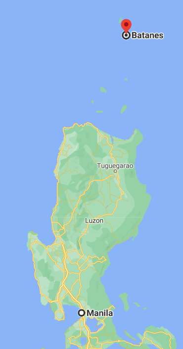

Batanes
Batanes
(Ivatan: Provinsiya nu Batanes; Tagalog: Lalawigan ng Batanes, IPA: [bɐˈtanes]) is an archipelagic
province in the Philippines, administratively part of the Cagayan Valley region. It is the
northernmost province in the country, and also the smallest, both in population and land area.
Its capital is Basco located on the island of Batan
How to get there?

The fastest way to reach Batanes is by air. However, the options are limited. Philippine Airlines
and Skyjet Air fly to Basco, the capital town of the province. Travel time is 70-110 minutes,
depending on your choice of airline. You will be landing at Basco Airport. The town center is just a short walk away.
Destinations in Batanes
- Morong Beach is one of the more popular beaches in the province, thanks to the large rock
formation called Nakabuang Arch. This natural formation is said to be the most photographed spot in
all of Batanes and has become the icon of Sabtang Island and Batanes as a whole.

- Vayang Rolling Hills will give you an unobstructed view of the majestic Mt. Iraya, as well as
the province’s significant islands Batan, Sabtang, and Itbayat, all at once.
- Mt. Carmel Chapel, also known to locals as Tukon Church. Local artisans built this small
chapel on top of a hill, and the province’s traditional stone houses inspired its design. The chapel
is ideal for couples who want a romantic and small marriage ceremony. Inside the chapel are paintings
of saints done by local artists.
- Rakuh a Payaman, affectionately called Marlboro Hills in Mahatao. The hills are vast
pastureland dotted with grazing cows, carabaos, and horses. It offers a perfect view of where land,
sea, and sky meet in harmony. With the green grass covering the hill, the landscape provides a
spacious and open area for cows, water buffalos, and horses where they can freely graze and wander
about.